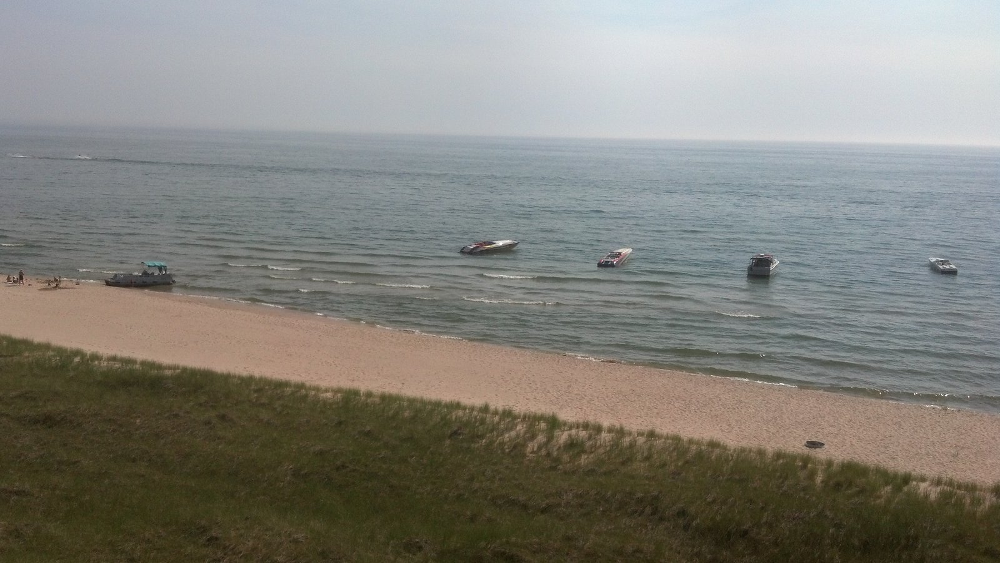

The Aquastar is 61 feet long, which makes her one of the smaller vessels the Mart Dock has ever kept in the water. She is also the one most people in Muskegon have actually been aboard.
Max McKee has spent most of his working life around bulk cargo and steel hulls measured in the hundreds of feet. The Aquastar is a different kind of boat entirely — a passenger vessel whose whole purpose is to carry people out the channel at seven o'clock on a summer evening and bring them back at dusk. When she came up for sale, McKee and his brother Patrick bought her anyway.
A Familiar Hull Under a New Name
For decades she sailed Muskegon Lake as the Port City Princess. Sylvia and Ralph Precious purchased her in 1987 and ran cruises from the Mart Dock, and for a generation of local families she was simply the boat you took for a birthday or an anniversary. By the time the McKees acquired her, she needed work.
The refit covered both interior and exterior — cabin finishes, deck surfaces, paint, and the mechanical systems that a passenger vessel needs to pass inspection season after season. She was renamed Aquastar and now operates as a division of Sand Products Corporation, sailing most nights from Memorial Day into October.
Where She Sits
The Aquastar's berth places her between two Navy veterans. On one side is the LST 393 museum ship. On the other is the vessel that sailed as the McKee Sons, converted to a tug-barge unit in 1953 and named for the family that has run marine operations here for generations.
Her ticket office has its own history. It is the same building the Milwaukee Clipper used when that auto-and-passenger ferry ran across Lake Michigan — a detail most passengers walk past without noticing on their way to the gangway.
What the Route Looks Like
A typical cruise leaves the dock and works east and then west across Muskegon Lake, passing the LST 393, the Milwaukee Clipper at her berth in the Lakeside District, and the World War II submarine USS Silversides. The boat then runs out through the Muskegon channel between the two lighthouses and into Lake Michigan proper.
From there the route follows the dune coastline while the sun goes down over open water. It is roughly the same passage that Goodrich Transportation steamers made out of this harbor in the 1890s, minus the freight.
Conclusion
Passenger service was never the reason the Mart Dock existed. But a port that only moves cargo is invisible to the town around it, and McKee's role at the Mart Dock has increasingly meant keeping some part of the operation open to people who do not work in shipping.